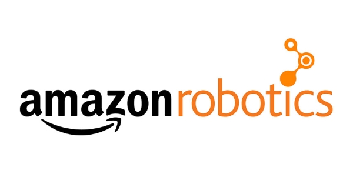
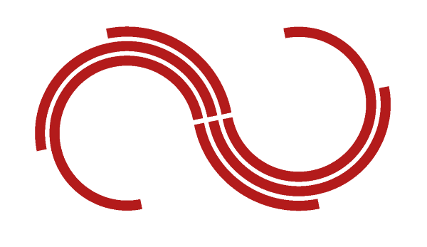
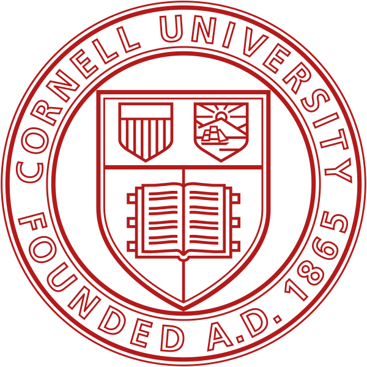

Tim Tran
Electrical and Computer Engineer
Engineering student with 3 years of experience in Computer Engineering and Computer Science.
My interests lie in Embedded Systems, Operating Systems, Microcontrollers, and Artificial Intelligence.
Featured Projects
Some of my greatest endeavours. A complete list of my up-to-date accomplishments can be found at LinkedIn.

Tempus
Tempus is a fast-paced action game that launches players into the heat of battle in a beautiful, strange fantasy world. Players inhabit Fluz, a powerful avian Timewalker, who can shift at will between the past and the present. This allows players to evade dangers in one time or leverage weapons from the other, as they dash between two worlds to survive and ultimately rewrite the timeline.
Play TempusStudyBuddy
StudyBuddy is an iOS app that is designed to help you connect with other students to study together. Once you sign up, you can instantly message people across the network to get studying.
Developed for AppDev Hack Challenge, Spring 2019.
View projectOScrabbl
OScrabbl is a Scrabble game for the command-line interface developed using (mainly) functional constructs in OCaml.
View projectWork Experience
Involved in many roles in the Computing industry. Is willing to adapt and learn new skills on the fly.
Electrical Test Engineer Co-op
Amazon Robotics
06/2020 - Now
- Developed an automated test fixture with a Raspberry Pi and PiCam to validate the functionality of LEDs on a robot utilizing Python and OpenCV.
- Programmed an automated test suite in Python using AWS Athena queries and AWS SageMaker to deploy the model.
- Restored and modified a PCB used for LED distortion testing of a robot’s Main Electrical Assembly with KiCAD.
- Set up a DHCP server and configured WLAN channel controls for Drive Unit testing.
Hardware Subteam Lead
Cornell Hyperloop
09/2019 - 06/2020
- Researched and guided the team towards completing the design of a Battery Management System.
- Finalized the selection of the drive motor controller unit.
- Hosted 2 workshops and 8 work sessions to further bolster the base knowledge of team members.
- Designed a battery array to support two 400V engines powering the pod using smaller A123 LiFePO4 26650 batteries.
- Researched into designing a Battery Management System to support such a battery configuration.
Education
Cornell University - Ithaca, NY
B.S. in Electrical and Computer Engineering
Class of 2022
GPA: 3.9
